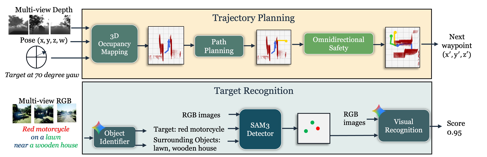

Aerial Low-Altitude Navigation in Complex Environments (AeroLANCE) is a training-free navigation framework for vision-language navigation (VLN) with drones. AeroLANCE splits the VLN task into two separate components -- Trajectory Planning which derives a safe UAV trajectory through 3D spatial computation and Target Recognition which performs semantic processing of instruction and camera images with vision-language models. By employing scene-agnostic algorithms for trajectory planning and zero-shot VLMs for target recognition, AeroLANCE generalizes across various types of outdoor and indoor environments. AeroLANCE build a dense 3D occupancy map of the environment in real time and uses it for spatial reasoning. Additionally, it takes proactive and reactive safety measures to avoid collision in complex environments. AeroLANCE tracks potential target instances, looks for key surrounding objects and evaluates a location combining visual and spatial information.